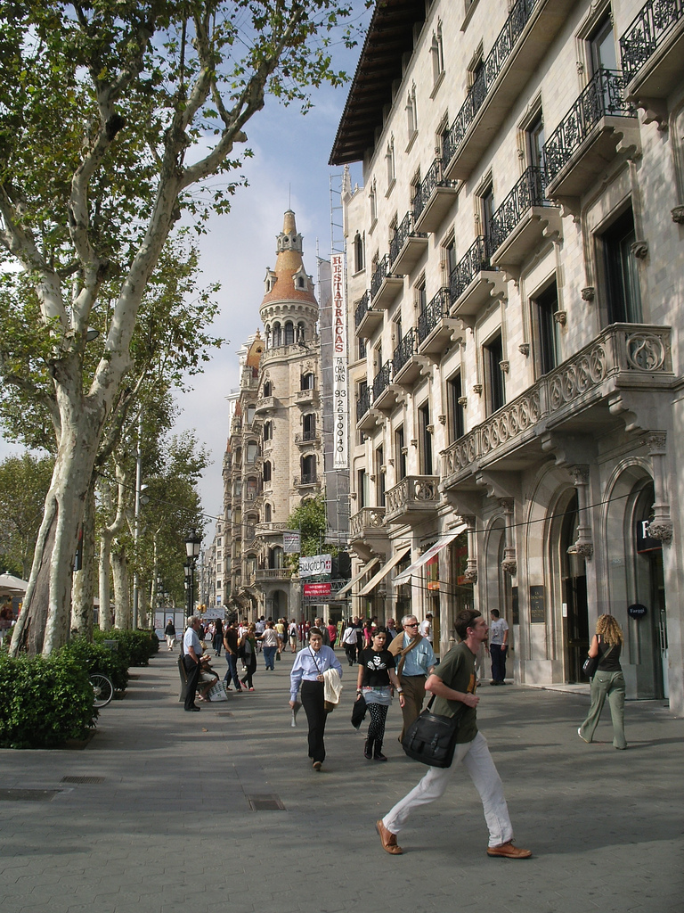
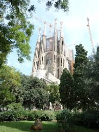
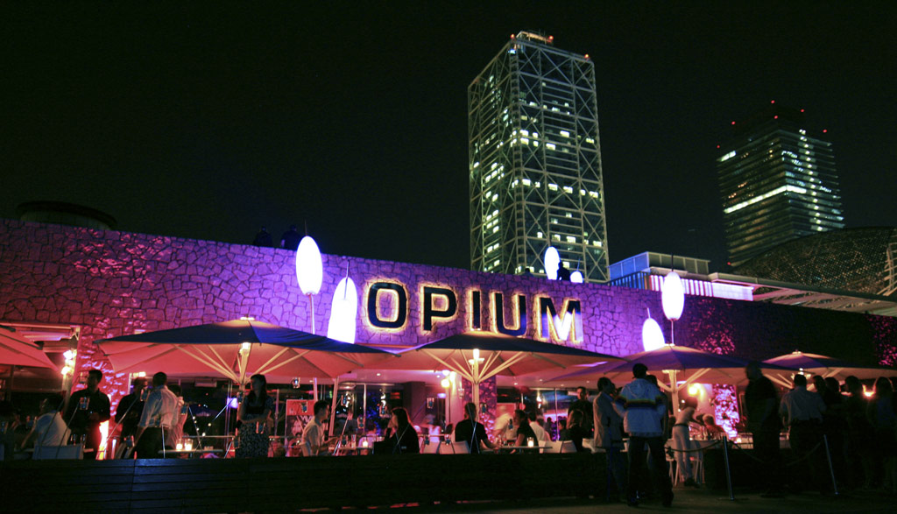
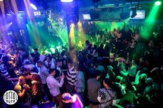
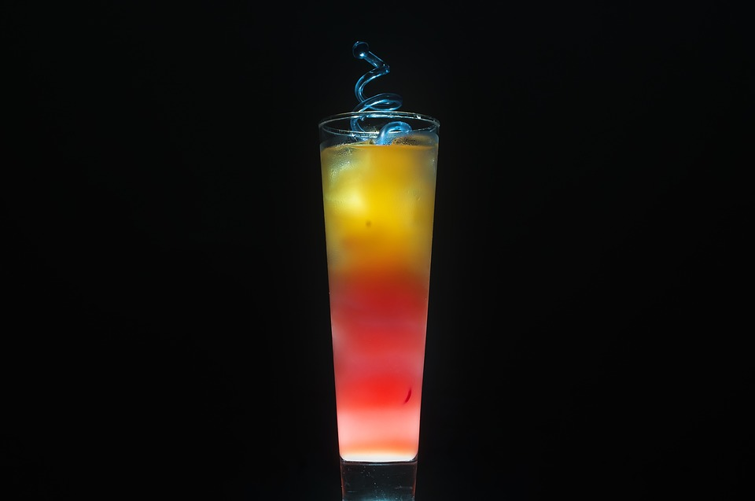

Hvad kan man opleve i Barcelona?
Barcelona er byen med det hele.




Den store gade Passig de Gracia er spækket med forskellige modebutikker og tapasbarer.
Gaudi og Miro er Barcelonás to største kunstnere. Og deres værker befinder sig overalt i og omkring byen og hvert år
valfarter flere tusinde turister til byen for at opleve det.
Her kan du bla opleve den fantastiske kirke La Sagrada Familia og den flotte park Park Guell
Den lækre badestrand Barceloneta ligger blot få kilometer fra centrum og er helt sikkert et besøg værd.




Hvor går man i byen?
beachparty eller trendy club?
De store trendy natklubber og de små hyggelige barer, kan du bl.a. finde på “Carrer de Balmes”, der ligger midt i Barcelona centrum.
Den lækre badestrand “Barceloneta” ligger blot få kilometer fra byens hovedgade, Ramblaen og der kan du om dagen bade og nyde
en dejlig frokost fra de mange små restauranter der ligger langs kysten”.
Om aftenen er der spækket med danseglade mennesker, der er klar på at feste med dig, hvadenten du er til pop, rock eller tecno.